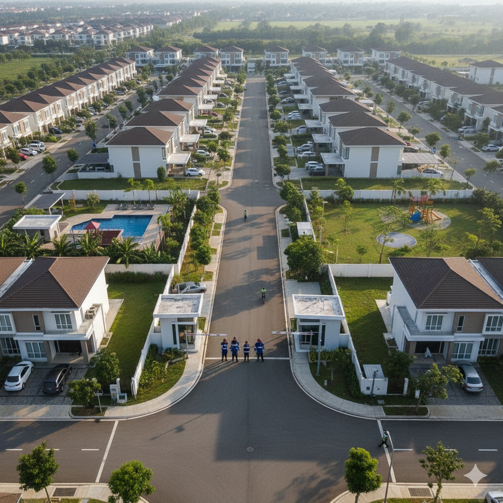
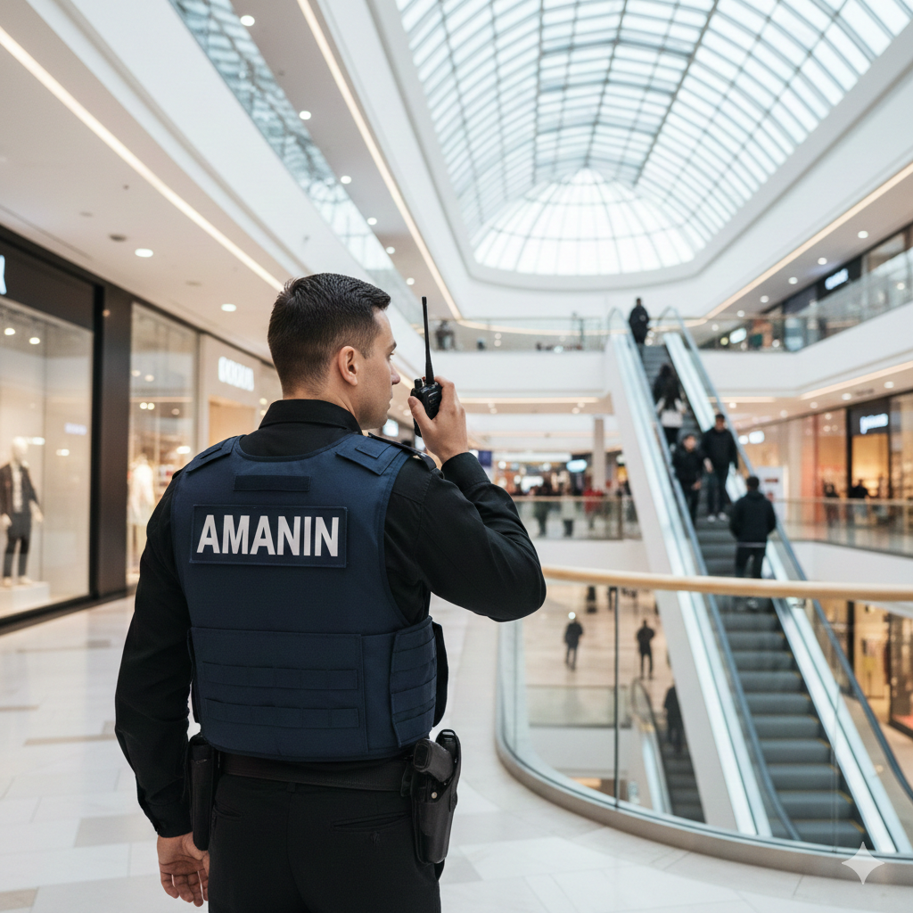
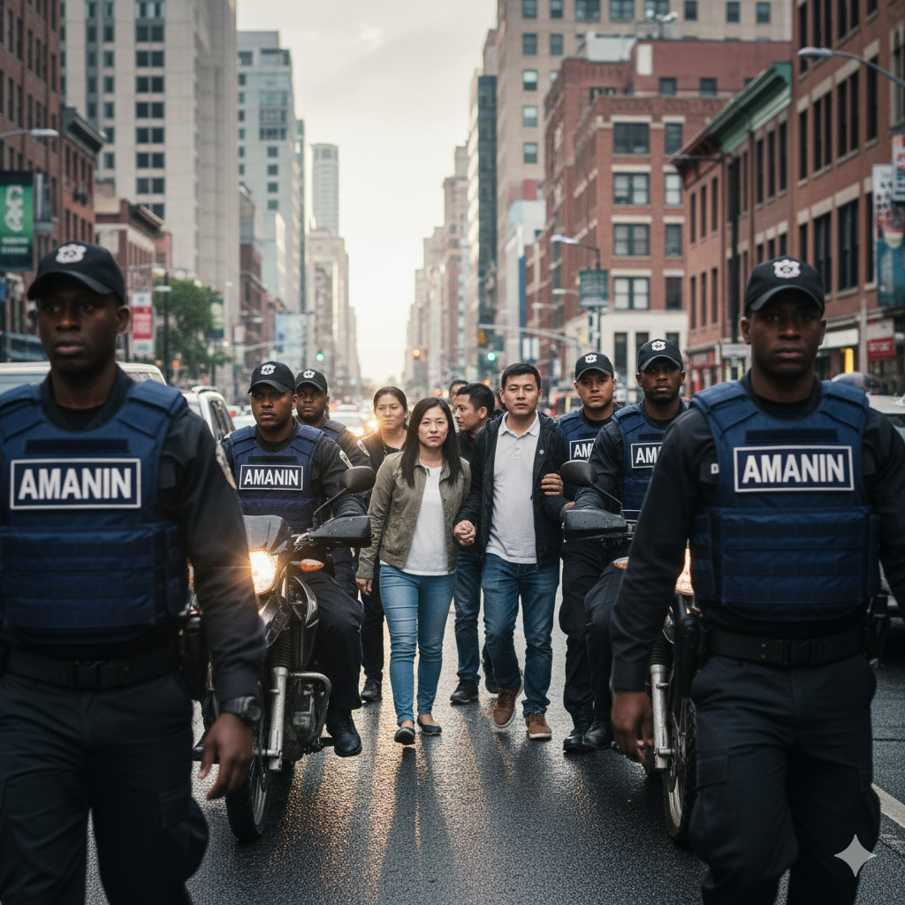

Waktu Respons Rata-Rata
4.5 MenitTingkat Kepuasan Klien
98%
Solusi Keamanan Terpadu untuk Ketenangan Pikiran Anda.
Jelajahi Solusi
Perlindungan Maksimal, Dibantu Kecerdasan Luar Biasa, Setiap Saat.
Lihat Detail

Pemantauan 24/7 dan tindakan pencegahan proaktif untuk perlindungan aset dan personel.
Pelajari Lebih LanjutPengawalan profesional untuk individu penting, aset berharga, atau transportasi logistik dengan kerahasiaan maksimal.
Pelajari Lebih LanjutPusat operasi terpadu untuk koordinasi, manajemen insiden, dan respons cepat darurat dalam hitungan detik.
Pelajari Lebih LanjutAMANIN adalah mitra terpercaya Anda dalam menjaga keamanan, didukung oleh integritas, teknologi, dan keandalan.
Pendirian Awal
AMANIN didirikan dengan visi menciptakan lingkungan yang aman.
Ekspansi Kapasitas
Mendirikan kantor pusat pertama dan merekrut 1500 anggota pengamanan.
Pengakuan Nasional
Diakui dan disertifikasi oleh Kementerian Keamanan Negara.
Pertumbuhan Anggota
Total anggota pengamanan mencapai 5000 personil terlatih.
Pembangunan Markas Baru
Mendirikan Menara Keamanan Barat - Jl. Sakti, Indonesia.
Jaringan Klien
Dipercaya oleh total 250 klien nasional, termasuk 40 pusat perbelanjaan (mall).
Kami adalah tim keamanan profesional yang berdedikasi untuk memberikan solusi perlindungan terbaik. Kami mengintegrasikan teknologi modern, seperti AI-powered surveillance, dan personel terlatih untuk memastikan lingkungan yang aman bagi setiap klien, dari skala kecil hingga korporasi besar.
Hubungi KamiWaktu Respons Rata-Rata
4.5 MenitTingkat Kepuasan Klien
98%Mari Kita Amankan Lingkungan Anda